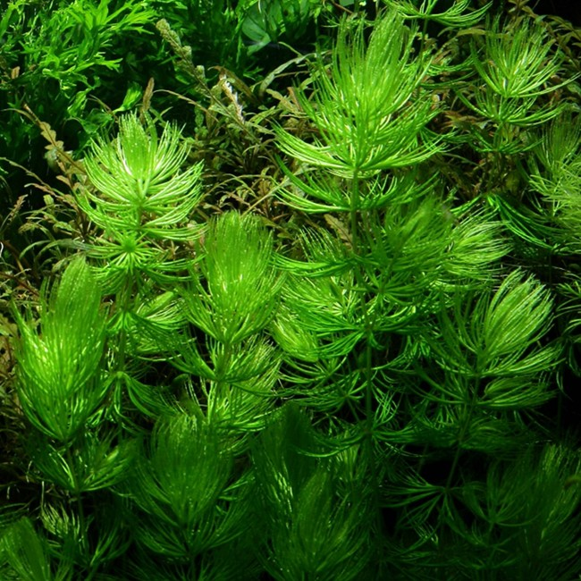

Overview
The plant known as Kumbhi or Shaivala is commonly referred to as blue-green algae or coon tail.
Botanical Name
Ceratophyllum demersum Linn
Family
Ceratophyllaceae
Regional Names
- Bengali: Shaivala
- Gujarati: Sheval
- Hindi: Shevar
- Tamil: Velampasi
- Telugu: Nachu
Classification (Gana)
Bhavprakash Nighantu: Pushpa Varga
Raja Nighantu: Shalmalyadi Varga
Kaiyadeva Nighatu: Aushadhi Varga
External Morphology
A blue-green algae
Useful Parts
Important Phytoconstituents
- Calcium
- Protein
- Magnesium
- Ferredoxin
- Plastocyanin
Rasa Panchak
- Rasa: Tikta, Kashaya, Madhura
- Guna: Laghu, Snigdha
- Virya: Shita
- Vipaka: Katu
Action
Pittahara
Therapeutic Indications
- Trishnahara: Reduces excessive thirst
- Jwarahara: Anti-pyretic
- Dahaprashamana: Relieves burning sensations
- Mutrala: Diuretic
- Ashmarighna: Lithotriptic
Therapeutic Uses
- Trishna: A paste of Shaivala with lotus, parched flour, and sour juice is beneficial in excessive thirst.
- Visha: Shaivala paste is applied on insect-bite or bee bites.
- Jwara: Fresh juice is beneficial in chronic fever.
Dose
Formulations
- Hriberadi Yoga
- Kesharvadi Lepa
- Bhadrashriyadi Gana
Adverse Effects
Not Known
Remedial Measures
Not Required
Purification
Not Required